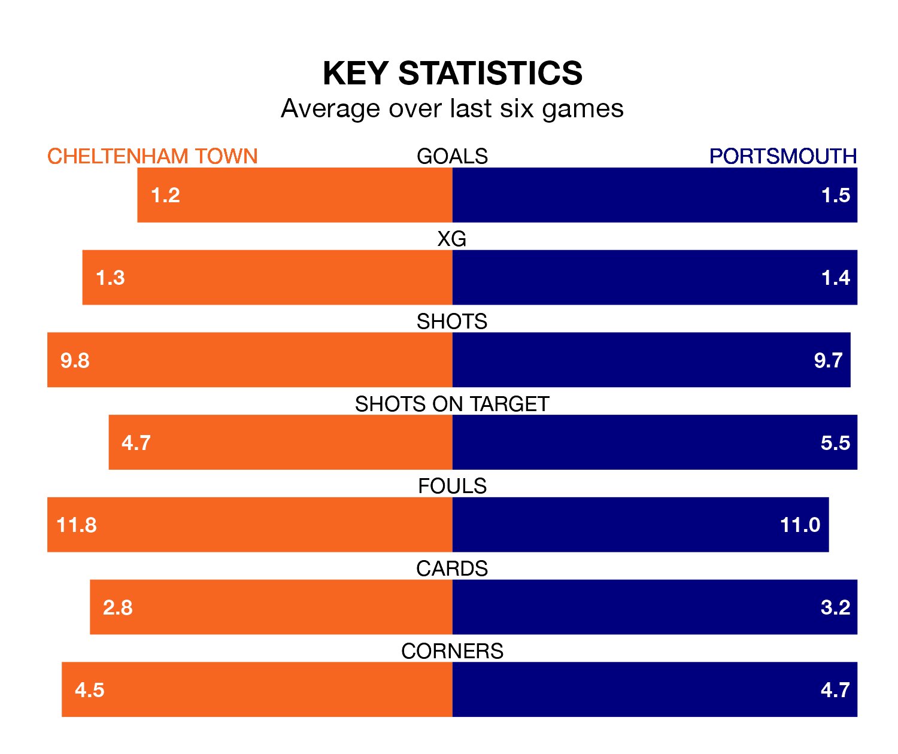

Mid-season relegation candidates Cheltenham Town face a challenge against high-flying Portsmouth at the Completely-Suzuki Stadium on Saturday.
Cheltenham Town are 22nd in the EFL League One table, and have picked up five wins and five draws in their 24 games to date.
Pompey, meanwhile, are top of the standings with 53 points, having won 15 and drawn eight of their first 25 matches.
With Will Norris between the sticks, Portsmouth can rely on one of the league's safest pair of hands. He has kept 12 clean sheets in his 25 appearances this season, and no 'keeper has prevented the opposition scoring more often in EFL League One.
In Cheltenham's net, Luke Southwood has five clean sheets in 24 games. He has conceded a goal every 72 minutes, 70% more often than the 125 minutes between goals for Norris.
With 17 goals in 24 games so far this season, Town are the league's joint-third-lowest scorers with 0.7 goals per game. And they are conceding more than average, letting in 33 goals at a rate of 1.4 per game.
Pompey, meanwhile, are above average scorers, with 1.6 goals per game, compared to a league average of 1.3. They have conceded 0.8 goals per game.
In the last five years, Cheltenham and Portsmouth have played each other on six occasions. Cheltenham won one of them, Portsmouth three, and they drew twice.
On average, the Robins scored 0.3 goals and Pompey 1.7 in those matches.
Their last meeting was on August 19, when they played out a 0-0 draw.
The Robins are in mixed form in EFL League One, with two wins and two draws from their last six games.
With three wins and two draws over that period, the visitors' form is better – they have taken 11 points from 18, compared to the home team's eight.
Cheltenham's last match was on Monday, a 1-0 loss against Northampton Town.
Portsmouth beat Stevenage 2-1 last time out, also on Monday, with Colby Bishop and Patrick Lane on the scoresheet.
Saturday's match will be refereed by Simon Mather, who has taken charge of seven EFL League One games so far this season, issuing seven red cards and booking 43 players. He has awarded one penalty.
The last Portsmouth game Mather refereed was the 0-0 draw away at Stevenage on August 26. He is yet to oversee a match featuring Cheltenham this season.
Updated: 10:36, 03/01/24